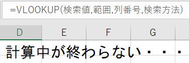

大量VlookupをVBAで高速に処理する方法について

大量データ同士のVlookup処理は、非常に時間のかかる処理となります、
以下の表で検証します。
一致したSheet2のB列を、Sheet1のB列に入れます。
=VLOOKUP(A2,Sheet2!A:B,2,FALSE)
これを10万行いれると、とても時間がかかるのでVBAで何とかしようという事です。
Sub test()
Dim rng検索値 As Range
Dim rng検索範囲 As Range
Dim rng出力範囲 As Range
Set rng検索値 = Worksheets("Sheet1").Range("A2:A100001")
Set rng検索範囲 = Worksheets("Sheet2").Range("A2:B100001")
Set rng出力範囲 = Worksheets("Sheet1").Range("B2:B100001")
Application.ScreenUpdating = False
Debug.Print Timer
Call sample○(rng検索値, rng検索範囲, 2, rng出力範囲)
Debug.Print Timer
Application.ScreenUpdating = True
End Sub
sample○
この部分を取り換えて、複数のプロシージャーを検証します。
Sub sample1(ByVal rng検索値 As Range, _
ByVal rng検索範囲 As Range, _
ByVal 列位置 As Integer, _
ByVal rng出力範囲 As Range)
Dim i As Long
For i = 1 To rng検索値.Rows.Count
rng出力範囲(i, 1) = WorksheetFunction.VLookup( _
rng検索値(i, 1), _
rng検索範囲, _
列位置, _
0)
Next
End Sub
普通に、
WorksheetFunction.VLookup
これで取得しています。
これは、シート関数そのものですので、速いはずがありません。
シートに関数を入れての再計算と同じ、むしろそれよりも時間がかかってしまいます。
それでも、ブックが重くなってしまうという事は避けられます。
たまに受ける相談で、
「シートに関数を入れたら再計算に時間がかかるのでマクロでやりたい。」
シート関数をマクロにしただけではあまり意味がないという事です。
Sub sample2(ByVal rng検索値 As Range, _
ByVal rng検索範囲 As Range, _
ByVal 列位置 As Integer, _
ByVal rng出力範囲 As Range)
Dim i As Long
Dim ary()
Dim myDic As New Dictionary
For i = 1 To rng検索範囲.Rows.Count
If Not myDic.Exists(rng検索範囲(i, 1).Value) Then
myDic.Add rng検索範囲(i, 1).Value, rng検索範囲(i, 1).Offset(, 列位置 - 1).Value
End If
Next
ReDim Preserve ary(1 To rng出力範囲.Rows.Count, 1 To 2)
For i = 1 To rng検索値.Rows.Count
ary(i, 1) = myDic.Item(rng検索値(i, 1).Value)
Next
rng出力範囲.Value = ary
End Sub
Dim myDic As New Dictionary
Microsoft Scripting Runtime
これを参照設定しています。
参照設定しない場合は、
Dim myDic As Object
Set myDic = CreateObject("Scripting.Dictionary")
検索値の全行に対して、検索値でDictionaryから値を取得しています。
十分に速いものとなっています。
Sub sample4(ByVal rng検索値 As Range, _
ByVal rng検索範囲 As Range, _
ByVal 列位置 As Integer, _
ByVal rng出力範囲 As Range)
Dim wb As Workbook
Dim ws1 As Worksheet
Dim ws2 As Worksheet
Dim i1 As Long
Dim i2 As Long
Dim rMax1 As Long
Dim rMax2 As Long
Dim ary1
Dim ary2
Dim ary3
Set wb = Workbooks.Add
Set ws1 = wb.Worksheets(1)
Set ws2 = wb.Worksheets.Add
rMax1 = rng検索値.Rows.Count
rMax2 = rng検索範囲.Rows.Count
ary1 = rng検索値
ReDim Preserve ary1(1 To rMax1, 1 To 2)
For i1 = 1 To UBound(ary1, 1)
ary1(i1, 2) = i1
Next
ws1.Range("A1").Resize(rMax1, 2).Value = ary1
ws2.Range("A1").Resize(rMax2).Value = rng検索範囲.Columns(1).Value
ws2.Range("B1").Resize(rMax2).Value = rng検索範囲.Columns(列位置).Value
With ws1
.Sort.SortFields.Clear
.Sort.SortFields.Add Key:=.Range("A1"), Order:=xlAscending
.Sort.SetRange .Range("A1").CurrentRegion
.Sort.Header = xlNo
.Sort.Apply
ary1 = .Range("A1").CurrentRegion
End With
With ws2
.Sort.SortFields.Clear
.Sort.SortFields.Add Key:=.Range("A1"), Order:=xlAscending
.Sort.SetRange .Range("A1").CurrentRegion
.Sort.Header = xlNo
.Sort.Apply
ary2 = .Range("A1").CurrentRegion
End With
wb.Close SaveChanges:=False
ReDim ary3(1 To rMax1, 1 To 1)
i1 = 1
i2 = 1
Do
Select Case True
Case ary1(i1, 1) = ary2(i2, 1)
ary3(ary1(i1, 2), 1) = ary2(i2, 2)
i1 = i1 + 1
Case ary1(i1, 1) > ary2(i2, 1)
i2 = i2 + 1
Case ary1(i1, 1) < ary2(i2, 1)
i1 = i1 + 1
End Select
If i1 > rMax1 Or i2 > rMax2 Then
Exit Do
End If
Loop
rng出力範囲.Value = ary3
End Sub
新規ブックを追加し、そこに検索値と検索範囲を入れています。
並べ替えした後、それぞれを配列に入れます。
検索値と検索範囲の配列を順次比較しながら、一致していれば値を取得しています。
Dictionaryとほぼ同様の処理速度となっています。
ほぼ同程度の処理速度の結果となりました。
マクロVBAコードの簡潔さでいえば、Dictionaryに分がありそうです。
処理速度が同程度なので、どちらを使うかは好みになるかと思います。
場面によって使い分けすれば良いでしょう。
同じテーマ「マクロVBA技術解説」の記事
エクセルVBAのパフォーマンス・処理速度に関するレポート
VBAのFindメソッドの使い方には注意が必要です
マクロVBAの高速化・速度対策の具体的手順と検証
動的2次元配列の次元を入れ替えてシートへ出力（Transpose）
大量データで処理時間がかかる関数の対処方法（SumIf）
大量データにおける処理方法の速度王決定戦
遅い文字列結合を最速処理する方法について
大量VlookupをVBAで高速に処理する方法について
Withステートメントの実行速度と注意点
IfステートメントとIIF関数とMax関数の速度比較
スピルって速いの?スピルの速度について
新着記事NEW ・・・新着記事一覧を見る
VBA100本ノック 100本目：WEBから100本ノックのリストを取得｜VBA練習問題（3月3日）
VBA100本ノック 99本目：自動席替え（行列と前後左右が全て違うように）｜VBA練習問題（3月2日）
VBA100本ノック 98本目：席替えルールが守られているか確認｜VBA練習問題（3月1日）
VBA100本ノック 97本目：Accessデータを取得（グループ集計）｜VBA練習問題（2月27日）
VBA100本ノック 96本目：Accessデータを取得（マスタ結合&抽出）｜VBA練習問題（2月26日）
VBA100本ノック 95本目：図形のテキストを検索するフォーム作成｜VBA練習問題（2月24日）
VBA100本ノック 94本目：表範囲からHTMLのtableタグを作成｜VBA練習問題（2月23日）
VBA100本ノック 93本目：複数ブックを連結して再分割｜VBA練習問題（2月22日）
VBA100本ノック 92本目：セルの色を16進で返す関数｜VBA練習問題（2月20日）
VBA100本ノック 91本目：時間計算（残業時間の月間合計）｜VBA練習問題（2月19日）
アクセスランキング ・・・ ランキング一覧を見る
1.最終行の取得（End,Rows.Count）｜VBA入門
2.RangeとCellsの使い方｜VBA入門
3.変数宣言のDimとデータ型｜VBA入門
4.マクロって何？VBAって何？｜VBA入門
5.Range以外の指定方法（Cells,Rows,Columns）｜VBA入門
6.セルのコピー&値の貼り付け（PasteSpecial）｜VBA入門
7.繰り返し処理（For Next)｜VBA入門
8.セルに文字を入れるとは（Range,Value）｜VBA入門
9.マクロはどこに書くの（VBEの起動）｜VBA入門
10.とにかく書いてみよう（Sub,End Sub）｜VBA入門
- ホーム
- マクロVBA応用編
- マクロVBA技術解説
- 大量VlookupをVBAで高速に処理する方法について
このサイトがお役に立ちましたら「シェア」「Bookmark」をお願いいたします。
記述には細心の注意をしたつもりですが、
間違いやご指摘がありましたら、「お問い合わせ」からお知らせいただけると幸いです。
掲載のVBAコードは動作を保証するものではなく、あくまでVBA学習のサンプルとして掲載しています。
掲載のVBAコードは自己責任でご使用ください。万一データ破損等の損害が発生しても責任は負いません。